|
General Page
File Page
FTP Page
Tools Page
Preferences – General Page
This property page contains general settings that control behavior of Crimson Editor and it's look and feel.
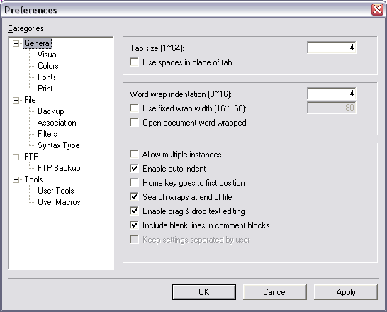
Tab size: Sets tab size used in documents.
Use spaces in place of tab: Insert appropriate number of space characters when tab character is typed. See also: Preferences – File – File Page – Convert tabs to spaces before saving.
Word wrap indentation: Sets the size of word wrapping indentation. When a line is word wrapped, the consecutive lines, that are not separated from the first line physically, will be indented by the size specified.
Use fixed wrap width: If checked, word wrapping occurs at the specified position, otherwise it occurs at the right edge of a window.
Open document word wrapped: Makes Crimson Editor turn on word wrapping feature automatically whenever a document is loaded.
Allow multiple instances: Allows multiple instances of Crimson Editor running at the same time.
Enable auto indent: If this option is turned on, Crimson Editor tries to indent the line of editing properly.
Home key goes to first position: Makes the caret to go to the first position in the line instead of first indented character.
Search wraps at end of file: Enables circular search so after the last occurence of a search pattern in the file the search will jump to first one.
Enable drag & drop text exiting: Enables Drag-and-Drop feature if checked.
Include blank lines in comment blocks: If unchecked any lines that are empty will not get a comment symbol placed at the start of the line if CTRL+M is pressed.
Keep Settings Seperated by user: Allows different settings to be used by different users.
Preferences – General – Visual Page
This property page contains settings that control appearance of Crimson Editor. Please note that there are also toolbar and window controls that are located in the View – Toolbars/Views section of main menu.
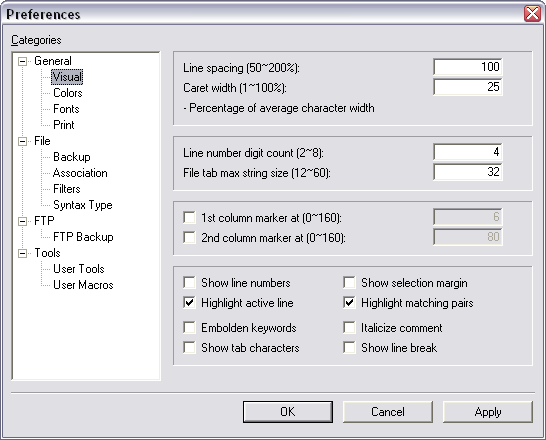
Line spacing: Sets the relative size of space between lines.
Caret width: Sets width of the caret for Insert Mode in percentage of average character width. In Overwrite Mode, the width of the caret is 100% of the character width on which the caret is currently on, and is not changable.
Line number digit count: Sets the number of digits to be used for numbering lines.
File tab max string size: Sets maximum string size of filenames displayed in the File Selection Tab. If a filename is longer than this size, it will be abbreviated into the size specified and an ellipsis will be appended at the end.
1st & 2nd column marker at: Draws vertical dotted lines on screen at the specified position. Column markers are helpful sometimes especially when struggling with strictly formatted languages. (i.e. FORTRAN)
Show line numbers: If checked line numbers are shown. Number of digits to be used by line numbers in defined by Line number digit count
Show selection margin: Toggles selection margin for line numbers and bookmarks. If line numbers are enabled selection margin is enabled by default.
Highlight active line: Highlights active line by filling color inside and drawing a dotted box around it. You can specify the filling color of active line at Preferences – General – Colors Page.
Highlight matching pairs: Highlights matching pairs by underlining both of the pairs when the caret is currently on one of them.
Embolden Keywords: Draws keywords in a document using bold character font. This option applies to both screen and print pages.
Italicize Comment: Draws comment in a document using italic character font. This option applies to both screen and print pages.
Show tab character: If checked tab characters are shown with light grey arrows.
Show line breaks: If checked line breake characters will be shown at the end of each line.
Preferences – General – Colors Page
This property page shows the colors to draw documents in screen and print pages. Clicking on a color item opens a Color Dialog Box to change the color of each item.
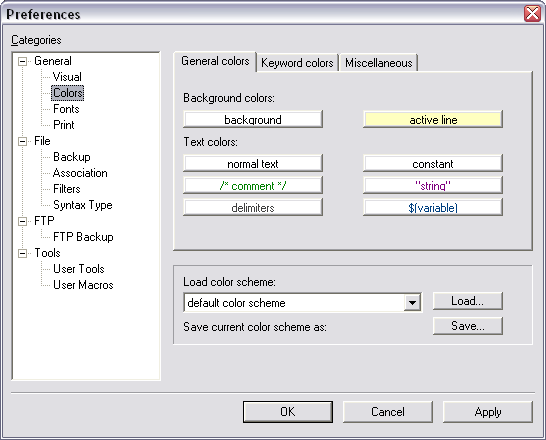
General Colors: This setting control colors of the main editor window.
- Background
- Active Line
- Normal text
- Constant
- Comment
- String
- Delimiters
- Variable
Keyword Colors: Syntax highlighting color settings.
- keyword0 - keyword9: Each of these keyword numbers correspond to keyword definition in custom syntax files.
Miscellaneous Colors: Color settings thad did not fall into categories above.
- Left margin: Color of select margin.
- Line numbers: Color of line number digits.
- Range 1 & 2 background: Background for the Range Syntax highlighting.
- Highlighted text: Highlighted text was designed for XML document to highlight all the string between brackets.
- Shadowed text: Color for shadowed text like HTML comments.
Load color scheme: Select one of those color schemes from the drop down menu to load and apply predefined color scheme as a whole. You can define and save your own color schemes. Also there are four predefined color schemes available:
- default color scheme
- light gray color scheme
- simplified color scheme
- reversed color scheme
Load: Load a color scheme that is currently selected in Load color scheme drop down menu. It's necessary to click the Load button to display the color scheme.
Save: Save current color scheme. The saved color scheme will be automatically added to the Load color scheme drop down menu.
Preferences – General – Fonts Page
This property page shows registered fonts used to draw documents in screen and print pages. Double clicking on a font item opens a Font Dialog Box to change the font. You can register your favorate fonts before you use it actually. Once after registering fonts, you can quickly switch between those registered fonts via View – Screen Fonts or View – Printer Fonts Menu.
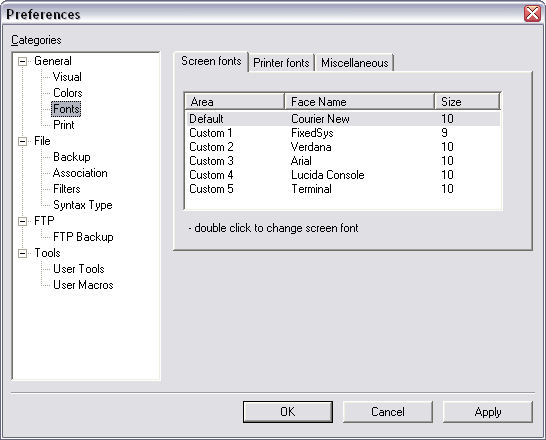
- Screen fonts: Font for Edit Window and Line Numbers.
- Print fonts: Font configuration for printing.
- Miscellaneous: Screen fonts for Crimson Editor specific modes.
- Column Mode: Font to be used when Column Mode is activated.
- Output Window: Font for user tools Output Window.
Preferences – General – Print Options Page
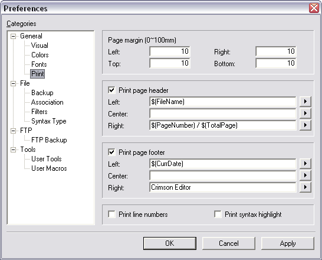
Setting of this section allows user to specify print options. The following settings are available:
Page margin: Sets the margin of print pages in milimeters.
Print page header: Prints page header with the specified contents.
Print page footer: Prints page footer with the specified contents.
Print line numbers: Prints line numbers in left side of document contents.
Print syntax highlight: Prints document contents in colors, otherwise it will be printed in black. This option is to be used with color printers.
Contents of the documents header and footer can be customized. Both header and footer are divided into three parts - left, center and right. Each part may contain the following elements automatically generated at print time:
- File Path
- File Name
- Page Number
- Total Page Count
- Current Date
- Current Time
Preferences – File Page
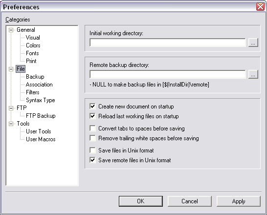
This section contains setting that control Crimson Editor file handling.
Initial working directory: Sets working directory. When Crimson Editor start, the working directory is to be opened in the Directory Window. If no working directory is specified, the last explored directory is to be opened instead.
Create new document on start up: If this option is set, Crimson Editor creates a new empty document on start up when there is no document to open.
Reload last working file on start up: If this option is set, Crimson Editor reloads all the last working files opened in previous session on start up.
Convert tabs to spaces before saving: If this option is set, Crimson Editor converts all the tabs in a document into spaces before saving the document.
Remove trailing white spaces before saving: If this option is set, Crimson Editor removes all the trailing white spaces in a document before saving the document.
Save files in Unix format: If this option is set, Crimson Editor saves a document padding each line in the document with LF only.
Save remote files in Unix format: If this option is set, Crimson Editor saves a remote document padding each line in the document with LF only.
Preferences – File – Backup Page
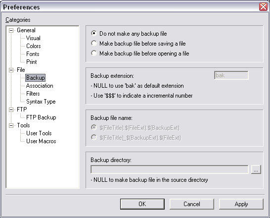
This property page shows settings for how to make backup files.
You can choose one of those backup strategy:
- Do not make any backup file.
- Make backup file before saving a file.
- Make backup file before opening a file.
Backup extension: Specifies backup file extension.
Backup file name: Specifies backup file name.
Backup directory: Specifies the directory where backup files to be made. Do not set this value to make backup files in the same source directory.
Preferences – File – Association Page
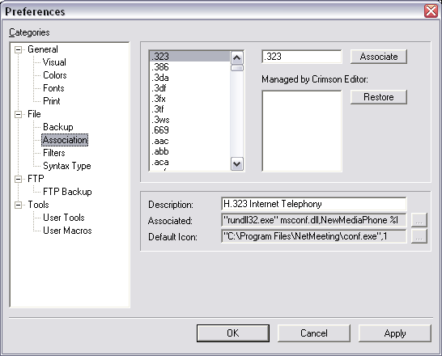
Associate: Associates the given file extension with Crimson Editor. Once you associate a file extension with Crimson Editor, double clicking on a file item which has the specified file extension in the Window Explorer opens that file in Crimson Editor.
Restore: Restores the file type association back into the original.
Preferences – File – Syntax Page
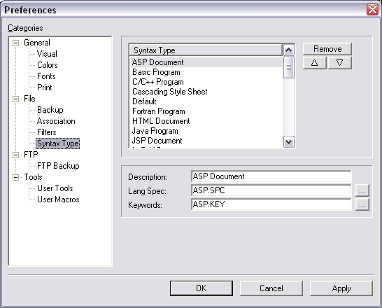
This property page shows a list of registered syntax types which is to be displayed in Document – Syntax Type Menu. You can customize the list of syntax types by adding, moving or deleting each item.
To register a new syntax type, two syntax definition files are needed. One is a language specification file, and the other is a language keywords file. If you do not have syntax definition files for your favorate language, visit Homepage of Crimson Editor to check if someone has posted one or to read documents about how to make custom syntax definition files.
Preferences – File – Filters Page
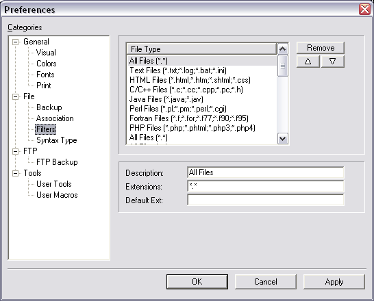
This property page shows a list of registered file filters which is used in Open dialog box, Save As dialog box, Open Remote dialog box and Save As Remote dialog box. File filters are also used in the Directory Window. You can customize the list of file filters by adding, moving or deleting each item.
Preferences – FTP Page
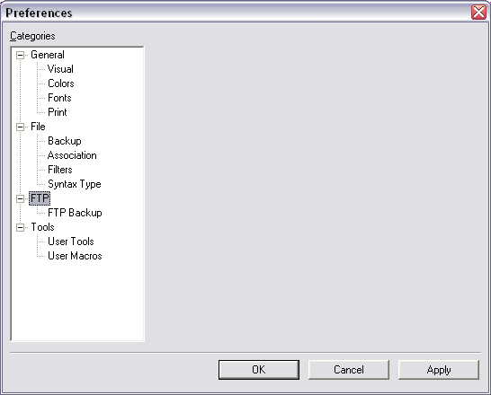
Preferences – FTP – FTP Backup Page
This page contains setting for FTP backup files.
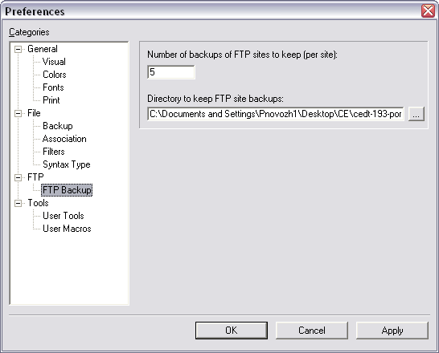
Number of backups of FTP stite: This Allows a user to set the number of backups of their sites to keep. Any files sent/received will be backed up.
Directory to keep FTP site backups: This is the directory to store the backups in, by default it is <CE install DIR–\ftp_backup\
Preferences – Tools Page
This page contains general tools setting.
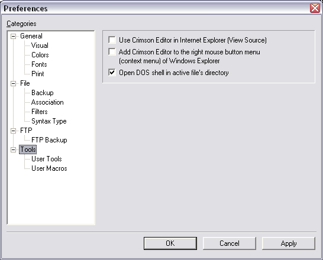
Use Crimson Editor in Internet Explorer 5: Sets Crimson Editor as default source editor for Internet Explorer. If you select 'View Source' popup menu item of Internet Explorer, the source file will be opened in Crimson Editor.
Add Crimson Editor to right mouse button of Window Explorer: Adds 'Crimson Editor' menu item to the popup menu of Window Explorer. Select file item(s) in Window Explore, click right button of mouse, and select 'Crimson Editor' then selected file(s) will be opened in Crimson Editor.
Open DOS shell in active file's directory: Instead of just opening a DOS shell Checking this will force the shell to open in the same directory as the currently active file.
Preferences – Tools – User Tools Page
This property page shows registered user tools that can be executed in Crimson Editor by pressing a single hot-key. Users can register any command that can be executed in Windows system to automate their work.
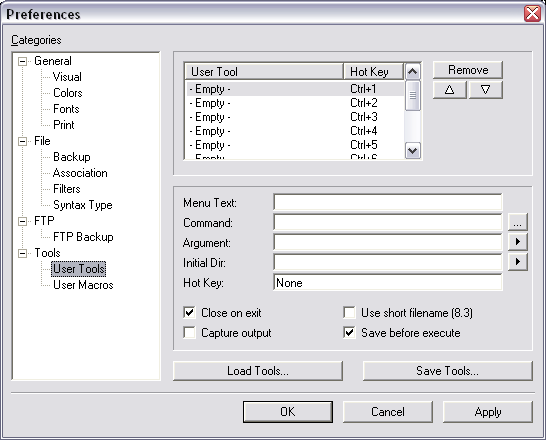
- Menu text: Sets string to be displayed in Tools menu.
- Command: Specifies a command to execute.
- Argument: Sets command line argument.
- Initial dir: Sets Initial directory where to execute this command.
- Hot key: Sets hot key to invoke this command.
- Close on exit: If the command is a DOS application, this option will close the MS-DOS shell window immediately after executing this command.
- Capture output: Redirects the output from the command into the Output Window of Crimson Editor.
- Use short filename (8.3): Converts long filename to short filename in the argument passed to the command.
- Save beore execute: Saves the document first before executing this command.
Preferences – Tools – Macros Page
This property page shows registered user macros. Macro is a sequence of keyboard actions recorded by users to do their repeatative work by pressing a single hot-key. In this page, users can rename, reposition, remove each macro items.
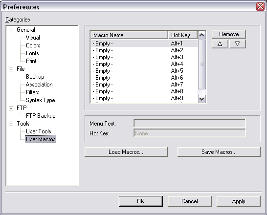
- Menu text: Sets string to be displayed in Macros menu.
- Hot key: Sets hot key to invoke this macro.
|